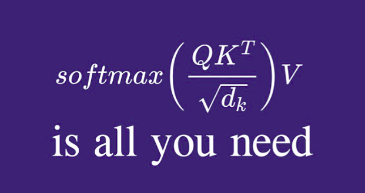

MLP
I dabble in speech systems, information retrieval, knowledge graphs and all types of open-source attention goodness. I enjoy developing and implementing creative approaches to language problems with multi-modal data.